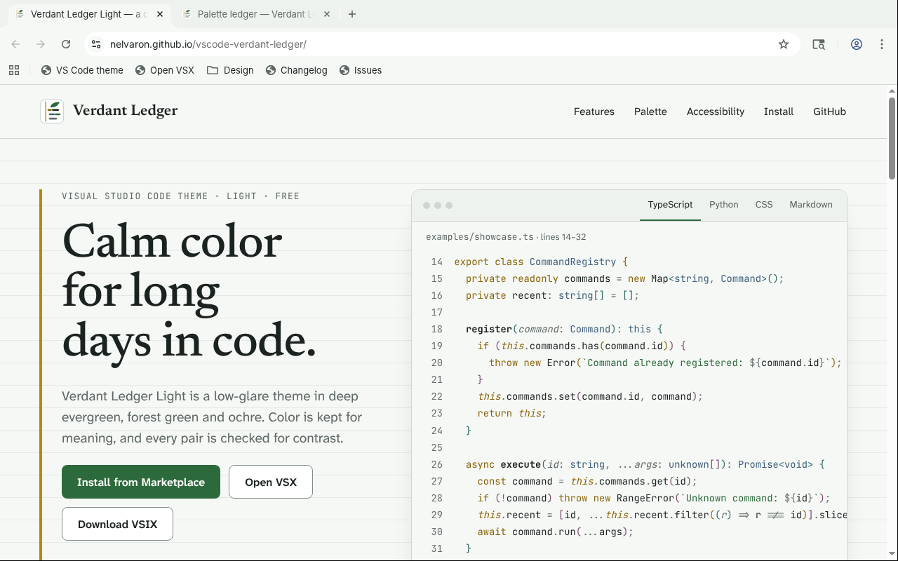

Browser theme · Light · Free
Calm color for long days on the web.
Soft green-tinted surfaces and deep evergreen text, with every pair checked for WCAG AA contrast. The companion to Verdant Ledger Light for VS Code.
A calm, low-glare light theme
for Chrome, Edge and Chromium.
Soft green-tinted surfaces and deep evergreen text, with every pair checked for WCAG AA contrast. The companion to Verdant Ledger Light for VS Code.
